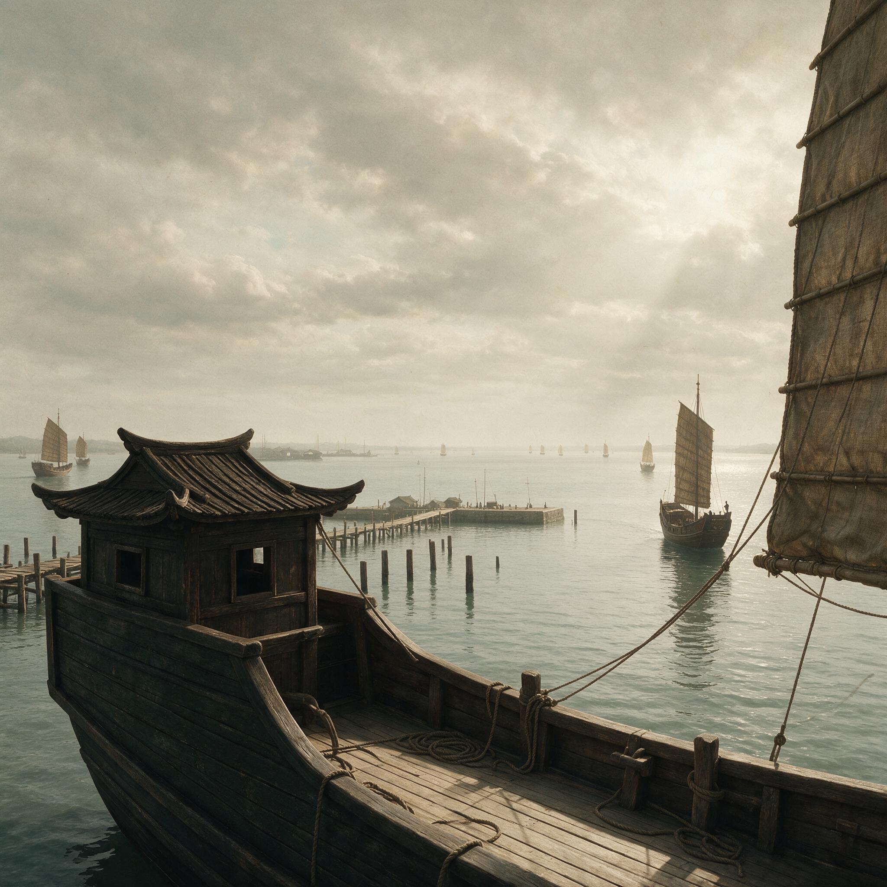

第 9 章
外海的折返点
船队离开港口的那一刻，共站在第三条楼的艉楼上，看着栈桥上的木桩一根一根往后退。没有仪式。没有人击鼓，没有人烧龟甲。唐昨晚已经把酒倒进海里了，今天早上他只是站在栈桥尽头，看着一条一条船从面前经过，嘴唇动了几下，像在数数。共经过的时候，唐没有看他。唐在看水面，在看船体下沉的深度。
舷墙距水面六尺。这个数字在共的脑子里已经扎了根。昨天装完最后一批粮食，他蹲在栈桥上往下看，水线离舷墙上沿只有六尺——不是量出来的，是看出来的。他看过太多船装到这条线，知道这条线意味着什么。唐也知道。但唐什么也没说，只是往海里倒了几滴酒，念叨了几句听不清的话，然后转身走了。

现在共站在艉楼上，看着琅琊台一点一点变小。台顶上的楼观先是缩成一个小方块，然后融进山体轮廓里，最后连山体也开始模糊。海雾从东边漫过来，不是浓雾，是那种薄薄的、均匀的白，像一层纱铺在水面上。琅琊山在这层纱后面慢慢褪色，从青绿变成灰绿，从灰绿变成浅灰，最后只剩下一个隐约的影子。
共回头看了看船队。十二条楼船排成两列，间距大约百步，帆都升起来了。风从西北来，不大，刚好能把帆布鼓满，船头切开水面的声音很轻，像刀划过湿的皮革。这个声音共听了三十年，闭着眼睛也能从声音里听出船速、水流和风向来。此刻的声音告诉他，船速大约是每个时辰四十里，正常。水流从东边来，逆着船头，也正常。风向西北，对往东偏南的航向来说不算好风，但也不算逆风，船可以走“之”字形折过去。正常。一切都正常。
但共知道，这种正常持续不了多久。凌晨一点二十四分，当海上航行的船只彻底失去推进力并开始偏离航道时，陆地上的人或许还能通过备用电力短暂恢复照明，但海不会给你备用方案。在海上，一旦偏离航道，参照物消失，每一步都是新的——没有路标，没有里堠，只有无穷无尽的水。
他在琅琊跑船三十年，最远到过成山头，往南到过海州湾，往东——往东最远的一次，是十年前跟着一条齐国的旧船追鱼群，追出去两天一夜，岸线从视野里消失了大半天。那大半天里，船上所有人都慌了。船长是个老齐人，跑过二十年的海，但那是他第一次看不到岸。共记得船长当时站在船头，手里攥着一把用来测风向的碎布条，布条被风吹得笔直，他却一直盯着西边看，好像只要盯得够用力，岸就会重新从海面上长出来。
岸没有长出来。后来他们掉头往回走，走了大半天才重新看见成山头的礁石。船长那天晚上喝了很多酒，对共说了一句话，共一直记到现在。他说，海不是路，路是有标记的，海没有。你在海上走，每一步都是新的，前面没有车辙，旁边没有里堠，天上没有星的时候，你连东西南北都分不清。
共那时候还年轻，不太懂这句话的意思。后来他跑船跑得多了，慢慢懂了。陆地上的一切——城池、道路、关隘、驿站、亭邮——都是标记，人靠着这些标记知道自己在哪里，知道往前走多远能到下一个有人烟的地方。
但海上没有这些。海上只有水，水上是天，天上有日月星辰，但星辰只能告诉你南北，不能告诉你东西。南北是固定的——北斗在哪儿，极星在哪儿，船头偏北多少度，这些共闭着眼都能判断。
但东西不一样。东和西没有固定的星，东和西是方向，方向只能靠参照物来确定。
在岸上，参照物是山、是河、是城池。在近海，参照物是岸线、是礁石、是岛屿。但到了外海，这些参照物一个一个消失，最后只剩下水和天。那时候你就不知道自己在哪里了。你只知道船在走，帆在鼓，水在流，但你不知道船头指向的是蓬莱还是深渊，不知道往前走一天是能踩到陆地还是永远踩不到——正如没有精确计时仪器，秦代的航海者无法测量经度，东西位置只能靠蒙，蒙对了是运气，蒙错了就是永远的消失。
共看了看船队的航向。现在船头指向东南偏东，这是徐福定的方向。徐福的座船在最前面，第二条是楼船司马的船，共的船在第三位。十二条船排成两列，每列六条，尾船在共的视线尽头已经缩成一个小点。这个队形是出发前楼船司马再三强调的——保持队形，保持间距，白天看旗号，夜里看灯火，不得擅自离队。但共知道，到了外海，这个队形维持不了多久。十二条船，吃水深度不一样，帆的面积不一样，船底附着的海蛎子厚度不一样，每条船对同一个风向的反应都不一样。在近海，这些差异还可以靠桨来补偿；到了外海，浪涌一起来，每条船都会有自己的走法，那时候队形就会散。散了的船队就再也收不拢了。
共见过一次。那是十年前在成山头外海，五条齐国的渔船追鱼群，遇到突风，散了。三天后才回来三条，另外两条半个月后才漂回来，船上的人嘴唇都裂了，眼窝陷进去，说话声音轻得像蚊子。他们说，在海上转了三天，完全不知道自己在哪儿，后来是闻到岸上的柴烟味才顺着风摸回来的。
柴烟味。共想到这里，回头看了看琅琊台的方向。台已经看不见了，山也看不见了，岸线只剩下一条极细的灰线，浮在水天之间。再过半个时辰，这条线也会消失。那时候，他们就只能靠天、靠水、靠风、靠经验来走了。
经验。共的经验告诉他，这条船装得太重了。他在艉楼上能感觉到船体的反应——不是正常的下沉和上浮，而是一种迟钝的、黏滞的晃动。浪从东边来，船头应该迎着浪抬起来，然后顺着浪背滑下去，这是正常节奏。但现在船头抬起来很慢，滑下去也很慢，每一次起伏都像是被什么东西拽住了。共知道是什么东西拽住了它——船舱里塞了太多的东西。粮食、淡水、药材、织物、工具、武器、种子、农具、简牍、祭器、六百名童男女、兵士、工匠、船工——所有这些都压在船底，把船体往水里摁。
昨天装完货，共蹲在栈桥上看了很久的水线。舷墙距水面六尺。楼船的设计水线，按照秦代将作少府的规范，舷墙距水面不应低于八尺。八尺是安全线，低于八尺，船在浪中的回复力矩就不够了。回复力矩——共不知道这个词，但他知道那个意思：船侧倾之后，靠自身的重量分布弹回来的能力。装得太重的船，重心低，回复力矩反而小，因为重量把船体压死了，浪一推就侧倾，侧倾之后弹不回来，越倾越大，最后翻掉。
共见过翻船。近海的渔船，装鱼装得太满，遇到侧浪，翻起来很快——不是慢慢倾斜，是“哗”一下，船底朝天，人全扣在下面。
楼船不会翻得那么快，楼船体量大，翻起来慢，但翻起来就救不回来。共的脑子里有一个画面：楼船侧倾，舷墙压进水里，海水漫过甲板，船上的人往高处爬，爬到最后，船体突然翻转，桅杆拍在水面上，帆布铺开像一片巨大的白色裹尸布。他把这个画面压下去，没有继续想。
但另一个念头冒了上来：如果在外海遇到大浪，这条船撑不撑得住？他不知道答案。
他只知道，现在回头还来得及。回头是西北风，顺风，三个时辰就能回到琅琊。
但他也知道，不会有人回头。徐福不会回头，楼船司马不会回头，那些站在甲板上、穿着官服、手里拿着简牍的人不会回头。他们不是跑海的，他们不知道海是什么。
共把目光从船尾收回来，看了看甲板上的人。童男女们被安排在舱底，没有命令不得上甲板。甲板上是兵士和船工，兵士们靠着舷墙坐着，有的在打盹，有的在磨刀，有的在低声说话。船工们各司其职——操帆的盯着帆布，操舵的握着舵柄，瞭望的站在桅杆顶上。共的儿子也在甲板上，在船头的位置，负责观察前方水面。共看了他一眼，没有叫他。在船上，父子不是父子，是船工和船工。
船队沿着山东半岛的海岸向东北方向走。共对这一带的海岸很熟悉。琅琊台往北，先是琅琊湾，然后是灵山岛，过了灵山岛是崂山湾，崂山湾北边是崂山——崂山上有块巨石，形状像一只蹲着的熊，从海上老远就能看见。过了崂山，海岸往东北偏，经过王台、不其、即墨，一直到成山头。成山头是山东半岛的最东端，礁石从岸上伸出去，像一排牙齿咬进海里。过了成山头，海岸转向北，经过芝罘，最后到碣石。这条线，共走过很多次。每一次走，他都知道自己在哪儿——灵山岛过去了，崂山的熊石出现了，王台的烽燧冒烟了，每一个标记都在告诉他，船在沿着海岸走，没有偏航。
但这一次不一样。这一次，船队不会在成山头停，也不会在芝罘停。徐福的命令是：沿成山头外海向东，进入外海，寻找蓬莱。
蓬莱。共听说过这个名字。齐地的方士们传了几百年，说东海里有三座神山，蓬莱、方丈、瀛洲，山上有仙人，有不死之药。共不信这些。他跑海三十年，没见过神山，没见过仙人，没见过不死之药。他见过的是风浪、暗礁、迷航、翻船、死人。但他也知道，信不信不重要。重要的是，坐在咸阳宫里的那个人信。那个人信了，就要有人出海。那个人要长生不老，就要有人死在海上。
船队过了灵山岛。灵山岛在船的左舷方向，隔着薄雾能看见岛上的山形。共看着灵山岛一点一点往后退，心里在算时间。从琅琊到灵山岛，大约六十里，以现在的船速，走了一个半时辰。按照这个速度，到崂山还要两个时辰，到成山头还要四个时辰。到成山头的时候，天应该快黑了。
天黑之后怎么走？共不知道。夜航在近海还可以——有岸上的灯火、渔火、烽燧的火光做参照，但在外海，夜航等于盲走。天上有星，但星只能告诉你南北，不能告诉你东西。而且，星不是随时都能看见的。海上起雾，云层遮天，星就没了。没了星的夜海是一片纯黑，你分不清天和水，分不清上下左右，船在走，但你感觉不到它在走，好像整个世界都凝固了，只有脚下的甲板在微微震动。
共经历过一次夜航迷航。那是七年前，从海州湾往琅琊走，半路起了海雾，星月全无，岸上的灯火也看不见了。船在雾里走了整整一夜，天亮的时候发现船头指向正东，离岸至少三十里。如果不是天亮得早，再走两个时辰，他们就进外海了。那次回来之后，共大病一场，发烧说胡话，梦里全是黑色的水。现在他又要进外海了。这一次不是意外，是命令。
崂山的熊石出现在右舷方向。共眯着眼看了一会儿，确认是那块石头。熊石的形状很特别，从海上某个角度看，确实像一只蹲着的熊，但偏一点角度就不像了。老跑海的都知道，看熊石要看三个点：熊头、熊背、熊屁股。三个点对齐了，就知道自己在哪里。
共在心里把三个点对了一遍，确认了船位，然后看了看风向。风还在从西北来，但风力比刚才小了。帆布没有刚才那么鼓，船速在下降。
共皱了皱眉。风力下降不是好兆头。西北风是这一带秋季的常风，通常从午后开始减弱，到傍晚会有一段时间几乎无风，然后入夜之后转成陆风——从岸上往海上吹的风。
陆风对往外海走的船来说是逆风，要走“之”字形，船速会大幅下降。如果风完全停了，就只能靠桨。桨在近海还可以用，到了外海，浪涌一起来，桨的作用就很有限了。
共走到船舷边，低头看水面。水色在变。近岸的水是黄绿色的，带着泥沙；离岸越远，水色越蓝。现在的水色是蓝绿色，说明离岸已经有一段距离了，但还没有完全进入深水。深水是深蓝色的，近乎黑色，水面下的透明度极高，能看见很深的地方。共不喜欢深水。深水意味着底下什么都没有，只有水，无穷无尽的水。
他抬起头，看了看船队的队形。十二条船还在，但间距已经拉开了。尾船的位置比出发时远了至少一倍，从一个小点变成了一小片模糊的帆影。楼船司马的船在第二条，和徐福的座船之间隔了大约一百五十步，比规定的间距多出了五十步。共知道这不是舵手的问题，是船的问题。每条船对风和水流的反应不一样，同样的帆、同样的舵角，不同的船走出来的航迹就是不一样。在近海，这些差异还可以通过不断调整来补偿；但在外海，浪涌和洋流的力量远大于桨和舵的力量，调整的能力会越来越小。船队会散。共在心里给出了判断。不是可能，是必然。
过了崂山，海岸线开始往东北偏。共对这一带的水域也很熟悉。崂山到成山头之间，沿岸有一串礁石，退潮的时候露出水面，涨潮的时候隐在水下。跑海的都知道这条礁石带的位置，经过的时候要往外偏一点，绕过去。共看了看船头的方向，发现船队没有往外偏，而是沿着直线走。他愣了一下，随即明白了——徐福的座船上有琅琊的本地船工，应该知道这条礁石带，但徐福可能下了命令，要保持航向，不得绕行。或者更糟：徐福根本不知道这条礁石带的存在。
共走到舵手身边，提醒他前面水下有礁石，需要往外偏一些。舵手是个年轻人，脸上有刺字——是刑徒，被征发来跑海的。他看了共一眼，又看了看船头方向，犹豫了一下，然后缓缓转动舵柄。船头开始往外偏，偏了大约十度。共点了点头，走到船舷边继续观察水面。水面下的礁石隐约可见。深色的影子在水下起伏，像一群趴着的巨兽。共盯着那些影子，心里在计算水深。楼船的吃水深度，按照现在的装载量，大约是八尺。礁石带的水深，退潮时最浅处只有五尺。如果船从礁石上方经过，船底会被撕开。
船底被撕开的楼船会怎样？共没有亲眼见过，但他听说过。楼船的船底是平的，不是尖的，这是为了在近岸浅水区航行。平底的好处是不容易搁浅，坏处是一旦触礁，破坏面积大，进水速度快。一艘满载的楼船，如果船底被撕开一个三尺长的口子，进水速度会在一刻钟之内让船失去浮力。船上将近五百人，在海上，一刻钟之内不可能全部转移。大部分人会被扣在舱底，和粮食、淡水、简牍、祭器一起沉下去。
共把目光从礁石上移开，看了看后面的船。后面的船没有偏航，还在沿着直线走。共心里一紧，想喊，但距离太远，喊也听不见。他只能看着那些船从礁石上方经过。
第一条过去了，没有触礁。第二条也过去了。第三条、第四条——共屏住呼吸，看着最后一条船从礁石带上经过。船体似乎顿了一下，然后继续往前走。触了？还是没触？共分辨不出来。
隔着那么远的距离，他看不到船底的情况。他只能看到那条船还在走，帆还在鼓，船头还在切水。
但如果船底被蹭了一下，裂了一道缝，裂缝会在接下来的航行中慢慢扩大，等裂缝扩大到一定程度，进水就会突然加速。那时候，船上的人可能还不知道发生了什么，只觉得船越来越重，吃水越来越深，然后突然之间，船头往下扎，再也抬不起来。
共转过身，走到船尾，看着那条船。那条船还在走，和前面的船保持着间距。共盯着它看了很久，没有看到异常。但他知道，有些异常是看不见的。
船队继续往东北走。成山头的礁石出现在右舷方向，像一排黑色的牙齿从海里伸出来。共看着成山头，心里知道，这是最后一次看到熟悉的岸标了。过了成山头，海岸转向北，船队要往东走。往东走，岸线就会从右舷方向消失。不是慢慢消失，是突然消失——成山头是山东半岛的最东端，过了这个点，往东看，什么都没有，只有水。
共看着成山头一点一点往后退。礁石的形状他太熟悉了——最外面那块叫“虎牙”，因为形状像一颗虎牙，尖头朝上；里面那块叫“龟背”，宽宽的，平平的，涨潮的时候被水漫过，退潮的时候露出黑色的石面。共在这片水域跑过无数次，每一次经过成山头，他都会看一眼虎牙和龟背，确认自己的位置。这一次，他看得比以往任何一次都久。因为他知道，这是最后一次看到陆地了。
成山头退到了船尾方向。共站在艉楼上，看着虎牙和龟背慢慢变小，最后缩成两个小黑点，融进岸线的轮廓里。岸线也开始后退，从一条清晰的线变成一条模糊的带，从一条模糊的带变成一层浅灰色的雾，最后连雾也散了。前面什么都没有了。
共转过身，面对船头方向。前方是水，水上是天，天和水之间有一条线，那条线就是全部。没有山，没有岛，没有礁石，没有岸，没有任何参照物。船头指向东南偏东，帆在鼓，水在流，船在走。但往哪里走？走了多远？离岸多远？前面有什么？这些问题，没有人能回答。
徐福的座船在最前面，帆影在共的视线里已经有些模糊了。海雾比刚才浓了一些，不是铺在水面上的那种薄雾，而是从天空垂下来的、一团一团的雾团。雾团在移动，被风推着往东南方向飘，有时候遮住徐福的船，有时候又露出来。
共看着那些雾团，心里涌起一种不安。这种雾不是好兆头。秋季的黄海，雾通常是从陆地上飘过来的辐射雾，范围不大，太阳一出来就散。但现在太阳已经偏西了，雾不但没散，反而越来越浓。
这说明雾不是从陆地上来的，是从海上生成的。海上生成的雾叫海雾，是暖湿空气遇到冷海水凝结成的，范围大，持续时间长，有时候能持续好几天。如果船队进入海雾区域，能见度会降到几十步甚至十几步，船与船之间会完全失去联系。
共看了看船队。十二条船还在，但间距已经拉得更大了。尾船的位置只剩下一个极小的帆尖，在雾团中时隐时现。楼船司马的船和徐福的船之间隔了至少两百步，已经超出了旗号的有效距离。共知道，如果雾再浓一点，船队就会散。
散的后果是什么？共在心里推演了一遍。徐福的座船上应该有琅琊的船工，对这片水域比较熟悉，但那是近海的经验。到了外海，近海的经验没有用。近海有岸标、有礁石、有岛屿、有水深变化、有水色变化、有海鸟的活动规律——所有这些参照物构成了一个导航系统。这个系统不需要地图，不需要仪器，只需要经验。但到了外海，这个系统完全失效。外海没有岸标，没有礁石，水深几百丈，水色深蓝近乎黑，海鸟极少出现。外海只有天和水。
天和水能提供什么参照？太阳。太阳早上升起的方向是东，傍晚落下的方向是西。但太阳在天空中的轨迹不是正东正西——秋季的太阳偏南，早上从东南升起，傍晚从西南落下。如果你不知道日期，不知道纬度，单靠太阳只能判断大致方向，误差可能有二三十度。
月亮也一样。星辰呢？星辰在晚上出现，但秋季的北天星空，能用来导航的只有极星和北斗。极星指向正北，北斗绕着极星转。看极星的高度可以判断南北位置——极星越高，越靠北；极星越低，越靠南。
但东西位置呢？没有星能告诉你东西位置。东西是经度，经度需要精确的时间测量才能确定——你知道某颗星在某个时刻应该在哪个方位，然后测量它的实际方位，差值就是经度差。但秦代没有精确的计时仪器，漏刻在陆地上可以用，上了船，船一晃，水面晃荡，漏刻就不准了。
所以秦代的航海者在外海完全无法确定东西位置。他们只能靠南北参照——极星、太阳、月亮——来维持一个大致的东西航向，但航向对不对，走了多远，完全不知道。人类学家林惠祥于1931年考辨《临海水土志》时提出，徐福所至若是台湾，地理面貌应是山溪纵横而非‘平原广泽’，这种争论本身就暴露了陆地逻辑对海洋空间的误判——人们总想用已知的陆地坐标去丈量未知的海域，却忘了海上根本没有坐标。
这就是为什么齐地的渔民从来不远航。他们追鱼群最多追出去一天一夜，看到岸线消失就掉头。不是胆子小，是知道再往前走就回不来了。
现在徐福要往前走。不是一天一夜，是不知道多久。蓬莱在哪里？没有人知道。徐福自己可能也不知道。他只知道东海里有神山，但神山在东海的哪个位置？多远？有没有岛屿做中转？有没有淡水补给点？这些问题，徐福可能根本没有想过。或者他想过，但他不能对秦始皇说“我不知道”。他说了“不知道”，就没有楼船，没有童男女，没有粮食，没有这一切。他说“知道”，才有这一切。但“知道”不等于能到。
共看着前方的水面。水色在加深，从蓝绿色变成了深蓝色。这说明水深在增加，已经离开了大陆架，进入了深水区。
深水区的浪和近岸不一样。近岸的浪受海底地形影响，浪高有限，方向也比较规律。深水区的浪没有地形约束，可以充分发育，浪高能到两丈甚至三丈。
楼船的设计抗浪能力，按照秦代的标准，是“能抗五尺浪”——也就是能在浪高五尺以内的海况下安全航行。五尺浪以上，船体开始剧烈摇晃，甲板上站不稳，舱底的货物会移位。一丈浪，船头会扎进浪里，甲板上全是水。
两丈浪，船体会被浪托起来，然后摔进浪谷，反复几次，船体结构就会开始松动。深水区的浪，秋季常见的高度是一丈到一丈五。如果遇到大风，两丈以上的浪也不罕见。
共看了看天。天空的云层在加厚，从西边推过来，一层一层叠在一起，颜色从白变灰。风在增强，从西北来的风带着凉意，吹在脸上像刀刮。共知道，天气在变坏。他走到舵手身边，提醒他风力在加大，需要把帆收一收。舵手看了看帆，又看了看共，犹豫了一下，然后招呼船工收帆。帆布被拉下来一半，船速立刻降了下来。
共点了点头，走到船舷边，看了看后面的船。后面的船没有收帆，还在满帆走，速度比共的船快，正在慢慢追上来。共皱了皱眉。在船队里，各船的航速不一致是危险的。快的船会追上前面的船，慢的船会被甩在后面。如果遇到突风，快的船来不及收帆，可能会翻；慢的船被甩得太远，可能会迷航。船队航行的基本原则是保持统一航速，快的收一点帆，慢的加一点桨，大家保持在一个相对紧凑的队形里。但现在，这个原则显然没有被遵守。
为什么？因为没有人下命令。徐福的座船在最前面，他看不到后面的情况。楼船司马在第二条船上，他应该能看到，但他可能没有意识到问题的严重性——他不是跑海的，他是在咸阳宫里被任命为楼船司马的，他懂文书、懂军法、懂赏罚，但不懂海。他可能觉得，船嘛，各走各的，到了目的地集合就行了。他不知道在海上，散了就再也合不拢了。共想派人去楼船司马的船上送信，但看了看两船之间的距离，放弃了这个念头。距离太远，送信需要放小船，小船在现在这种海况下放下去很危险，而且楼船司马会不会听一个老船工的建议，也是未知数。他只能管好自己的船。
天色在变暗。不是入夜的那种暗，是云层遮住太阳之后的那种阴沉。海面的颜色从深蓝变成了铅灰，浪头上开始出现白色的浪花。风在持续增强，帆布被吹得猎猎作响，桅杆发出吱吱嘎嘎的声音。共抬头看了看桅杆顶，桅杆在晃，晃动的幅度比刚才大了很多。船体的摇晃也在加剧。不是左右摇——左右摇是正常的，船在浪中一定会左右摇。现在是前后摇——船头抬起来，然后砸下去，抬起来，砸下去。这种前后摇叫“纵摇”，对船体结构的损伤最大。每一次船头砸进浪谷，船底都要承受巨大的冲击力；每一次船尾被浪托起来，船体中段都要承受巨大的弯曲力矩。纵摇持续久了，船底的木板会开始松动，接缝会开始漏水。
共蹲下来，把手掌贴在甲板上。甲板在震动，一种低沉的、持续的震动，从船底传上来。这种震动共很熟悉——是船底木板在受力变形时发出的。木板在正常航行中也会变形，但幅度很小，震动很轻微。现在的震动明显比正常情况剧烈，说明船底承受的力量已经超出了设计范围。
超载。共在心里骂了一声。如果船没有装这么重，船底承受的力量不会这么大。船装得越重，吃水越深，纵摇的幅度越大，船底受到的冲击力越大。这是一个恶性循环——超载导致纵摇加剧，纵摇加剧导致船体松动，船体松动导致漏水，漏水导致船更重，更重导致纵摇更剧。
他站起来，走到货舱口，掀开盖板往下看。货舱里黑乎乎的，什么也看不见，但能听到水声——不是外面的海浪声，是舱底的积水在晃动。共的心一沉。舱底积水是正常的，木船不可能完全不漏水，但积水通常很少，只是薄薄一层。现在他听到的水声很沉闷，说明积水已经有了一定的深度。他叫来一个船工，让他下去看看。船工提着油灯爬下去，过了一会儿爬上来，脸色不太好看。共问积水有多少，船工说到了脚踝。
脚踝，深度大约半尺。共在心里算了一下：舱底面积大约四十步见方，积水半尺，体积大约是一百二十立方尺，重量大约是七千斤。七千斤水，等于多装了三十五个人。共问船工是什么时候开始漏的，船工摇摇头，说不确定，可能是刚才过礁石带的时候蹭了一下。
共沉默了一会儿。如果是在礁石带蹭的，裂缝应该不大，进水速度不会太快。但问题是，船在纵摇，每一次船头砸下去，船底都会变形，裂缝会越变越大。现在进水速度是半尺深，再过一个时辰可能就是一尺深，两个时辰就是两尺。两尺深的舱底积水，重量超过两万斤，船会进一步下沉，纵摇会更剧烈，裂缝会更大。这是一个死循环。
共走到船尾，看了看后面的船。后面的船还在满帆走，速度比共的船快，已经追到了不到百步的距离。共能看到那条船的舷墙——距水面大约五尺，比共的船还要低一尺。那条船装得比共的船还重。
共转过身，看了看前方的海面。浪在增大，从东边涌过来的涌浪和从西北吹过来的风浪交叠在一起，形成了混乱的浪型。有的浪头从正面打过来，有的浪头从侧面打过来，船体被推得左摇右晃，纵摇和横摇同时发生，甲板上的人站都站不稳。
童男女们还在舱底。共能听到他们的声音——不是哭声，是一种低沉的、压抑的呜咽，从舱底传上来，被风浪声盖住大半，但仔细听还是能听到。共闭上眼睛，想象舱底的情形：六百个孩子挤在黑暗的、摇晃的、越来越潮湿的船舱里，脚下的积水从半尺涨到一尺，船体每砸一下浪谷，他们就摔成一团。有人吐了，有人哭了，有人晕过去了。没有人管他们。兵士守在舱口，不让他们上来。船工忙着操船，没有工夫下去看。
共睁开眼睛，看着越来越暗的天色。天黑之前，船队必须做出一个决定：继续往东走，还是掉头回去。继续往东走，就要夜航。夜航在外海，没有岸标，没有星——云层这么厚，星肯定看不见——完全盲走。而且风浪在增大，船体在漏水，童男女在舱底受苦。往前走，可能能到蓬莱，也可能永远到不了。掉头回去，风向不对——现在是西北风，回去是逆风，要走“之”字形，航速会大幅下降。而且天快黑了，掉头之后往哪个方向走？西北方向是岸，但岸在哪里？成山头已经在视线中消失了，没有任何参照物能告诉他们岸在哪个方向。如果掉头之后走偏了，可能擦着海岸线走过去，完全错过琅琊，漂到陌生的水域。
两个选择都不好。但必须选一个。
共看着徐福的座船。那条船还在往前走，帆影在雾团和浪花之间时隐时现，船头的方向没有任何变化。徐福没有下令掉头。他可能还在找蓬莱。他可能相信，再往前走一点，神山就会出现。他可能不敢掉头——回去怎么跟秦始皇交代？说没找到？那他的下场是什么？那些童男女的下场是什么？那些粮食、楼船、兵士的下场是什么？共不知道徐福在想什么。但他知道，在天黑之前如果不掉头，船队就会进入一个不可逆的状态。
什么是不可逆？不是不能掉头——船在任何时候都能掉头。不可逆是指，掉头之后回不去了。因为淡水在消耗，粮食在消耗，船员的体力在消耗，船体的损伤在累积，季风窗口在关闭。每往前走一个时辰，回去就需要一个多时辰，因为逆风。如果往前走得太远，回去需要的淡水就不够了，回去需要的体力就不够了，回去需要的船体强度就不够了。到了那个点，掉头也是死，不掉头也是死。
那个点在哪里？共不知道精确的位置。但他知道，那个点一定存在。每一艘出海远航的船都有一个不可逆点。过了那个点，船就不再属于出发港了，它要么到达目的地，要么消失。现在，船队正在逼近那个点。
共站在艉楼上，看着前方的海面。浪越来越大，天色越来越暗，徐福的座船越来越模糊。他回头看了看来时的方向——西边，那里是岸，是琅琊，是家。但那里已经什么都看不见了，只有一层又一层灰色的浪，从船尾方向涌过来，推着船往东走。
海不是路。路是有标记的，海没有。
共想起唐昨晚说的话。唐说，装到吃水线的船，在港口里看着没事，出了海就知道厉害了。唐说对了。唐还说了一句什么——共当时没听清，现在想起来了。唐说，装到吃水线的船，在港口里看着是船，出了海就是棺材。
共看着脚下的甲板，看着舷墙外越来越近的水面，看着船头前方没有尽头的灰色海面。风在耳边呼啸，浪在船底撞击，桅杆在头顶呻吟。他忽然意识到，唐说的不一定对。棺材是死的，船是活的——至少现在还活着。但活着的船正在往一个没有路标的海域深处走，带着将近五百个人、几万斤粮食、几百卷简牍、六百个孩子，和一个不知道在哪里的蓬莱。
天黑了下来。不是慢慢变暗，是云层压到海面上之后突然变暗。共抬头看天，天上没有星，没有月，只有一层厚厚的、均匀的灰色。海和天融在一起，分不清界限。船头的方向，徐福座船上的灯火亮了起来，隔着浪花和雾团，像一只萤火虫在风中明灭。后面的船也亮起了灯火，在共的视线里排成一串微弱的光点。那些光点在海面上起伏，忽高忽低，忽明忽暗。共看着它们，心里涌起一种奇怪的感觉——那些不是船，是魂魄，漂浮在海面上，找不到岸。
他转过身，对舵手说，跟着前面的灯火走，别丢了。舵手点了点头，眼睛紧盯着前方那一点微弱的光。共走到船舷边，最后看了一眼西边——那里已经完全黑了，什么都看不见。岸没有了。标记没有了。回去的路没有了。
船头继续指向东南偏东。夜海吞没了一切，只剩下十二点灯火在无边的黑暗中缓缓移动。共不知道天亮之后船队会在哪里，也不知道这些灯火还能亮多久。他只知道一件事：从这一刻起，每一滴淡水、每一张帆、每一块船板，都在把他们推向那个不可逆的点。过了那个点，琅琊就不在了，成山头也不在了，所有熟悉的东西都不在了。剩下的只有海，和一个越来越渺茫的蓬莱。